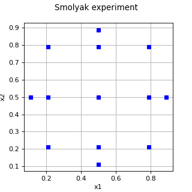

SmolyakExperiment¶
(Source code, png)

- class SmolyakExperiment(*args)¶
Smolyak experiment.
Warning
This class is experimental and likely to be modified in future releases. To use it, import the
openturns.experimentalsubmodule.- Parameters:
- experimentslist of
WeightedExperiment List of
 marginal experiments of the Smolyak experiment.
Each marginal experiment must have dimension 1.
marginal experiments of the Smolyak experiment.
Each marginal experiment must have dimension 1.- levelint
Level value
 .
.
- experimentslist of
See also
WeightedExperiment
Notes
The Smolyak design of experiments (DOE) is based on a collection of marginal multidimensional elementary designs of experiments. Compared to the
TensorProductExperiment, the Smolyak experiment has a significantly lower number of nodes [petras2003]. This implementation uses the combination technique ([gerstner1998] page 215). Smolyak quadrature involve weights which are negative ([sullivan2015] page 177). The size of the experiment is only known after the nodes and weights have been computed, that is, after thegenerateWithWeights()method is called.Method
Let
 be the integration domain
and let
be the integration domain
and let  be an integrable
function.
Let
be an integrable
function.
Let  be a probability density function.
The Smolyak experiment produces an approximation of the integral:
be a probability density function.
The Smolyak experiment produces an approximation of the integral:![\int_{\mathcal{X}} g(\boldsymbol{x}) f(\boldsymbol{x}) d\boldsymbol{x}
\approx \sum_{i = 1}^{s_t} w_i g\left(\boldsymbol{x}_i\right)]()
where
 is the size of the Smolyak
design of experiments,
is the size of the Smolyak
design of experiments,  are the
weights and
are the
weights and  are the nodes.
are the nodes.Let
![\boldsymbol{k} = (k_1, ..., k_{d_x}) \in (\mathbb{N}^\star)^{d_x}]() be the multi-index where
be the multi-index where
is the set of natural numbers without zero. Consider the 1 and the infinity norms ([lemaitre2010] page 57, eq. 3.28):
![\|\boldsymbol{k}\|_1 = \sum_{i = 1}^{d_x} k_i \qquad
\|\boldsymbol{k}\|_\infty = \max_{i = 1, ..., d_x} k_i.]()
for any
 .
.Let
 be an integer representing the level of the quadrature.
Let
be an integer representing the level of the quadrature.
Let  be a marginal quadrature of level .
This marginal quadrature must have dimension 1 as is suggested by the exponent in the
notation .
Depending on the level , we can compute the actual number of nodes
depending on a particular choice of that number of nodes and depending
on the quadrature rule.
The tensor product quadrature is:
be a marginal quadrature of level .
This marginal quadrature must have dimension 1 as is suggested by the exponent in the
notation .
Depending on the level , we can compute the actual number of nodes
depending on a particular choice of that number of nodes and depending
on the quadrature rule.
The tensor product quadrature is:![T_\ell^{(d_x)} = Q_{\ell}^{(1)} \otimes ... \otimes Q_{\ell}^{(1)}.]()
In the previous equation, the marginal quadratures are not necessarily of the same type. For example, if the dimension is equal to 2, the first marginal quadrature may be a Gaussian quadrature while the second one may be a random experiment, such as a Monte-Carlo design of experiment.
Let
 be the empty quadrature.
For any integer
be the empty quadrature.
For any integer  , let
, let  be the
difference quadrature defined by:
be the
difference quadrature defined by:
Therefore, the quadrature formula
 can be expressed depending
on difference quadratures:
can be expressed depending
on difference quadratures:![Q_\ell^{(1)} = \sum_{k = 1}^\ell \Delta_k^{(1)}.]()
for any
.The following equation provides an equivalent equation for the tensor product quadrature ([lemaitre2010] page 57, eq. 3.30):
![T_\ell^{(d_x)} = \sum_{\|\boldsymbol{k}\|_\infty \leq \ell}
\Delta_{k_1}^{(1)} \otimes \cdots \otimes \Delta_{k_{d_x}}^{(1)}.]()
The significant part of the previous equation is the set of multi-indices
 , which may be very large
depending on the dimension of the problem.
, which may be very large
depending on the dimension of the problem.One of the ways to reduce the size of this set is to consider the smaller set of multi-indices such that
 . The sparse
quadrature ([lemaitre2010] page 57, eq. 3.29, [gerstner1998] page 214)
is introduced in the following definition.
. The sparse
quadrature ([lemaitre2010] page 57, eq. 3.29, [gerstner1998] page 214)
is introduced in the following definition.The Smolyak sparse quadrature formula at level
is:![S_\ell^{(d_x)} = \sum_{\|\boldsymbol{k}\|_1 \leq \ell + d_x - 1}
\Delta_{k_1}^{(1)} \otimes \cdots \otimes \Delta_{k_{d_x}}^{(1)}]()
for any
.As shown by the previous equation, for a given multi-index
 the Smolyak quadrature requires to set the level of each marginal experiment to
an integer which depends on the multi-index.
This is done using the
the Smolyak quadrature requires to set the level of each marginal experiment to
an integer which depends on the multi-index.
This is done using the setLevel()method of the marginal quadrature.The following formula expresses the multivariate quadrature in terms of combinations univariate quadratures, known as the combination technique. This method combines elementary tensorized quadratures, summing them depending on the binomial coefficient. The sparse quadrature formula at level
is:![S_\ell^{(d_x)} = \sum_{\ell \leq \|\boldsymbol{k}\|_1 \leq \ell + d_x - 1}
(-1)^{\ell + d_x - \|\boldsymbol{k}\|_1 - 1}
{d_x - 1 \choose \|\boldsymbol{k}\|_1 - \ell}
Q_{k_1}^{(1)} \otimes \cdots \otimes Q_{k_{d_x}}^{(1)}]()
for any
where the binomial coefficient is:![{n \choose m} = \frac{n!}{m! (n - m)!}]()
for any integers
 and
and  .
.Merge duplicate nodes
The Smolyak quadrature requires to merge the potentially duplicated nodes of the elementary quadratures. To do so, a dictionary is used so that unique nodes only are kept. This algorithm is enabled by default, but it can be disabled with the SmolyakExperiment-MergeQuadrature boolean key of the
ResourceMap. This can reduce the number of nodes, which may be particularly efficient when the marginal quadrature rule is nested such as, for example, with Fejér or Clenshaw-Curtis quadrature rule.If two candidate nodes
 ,
associated with the two weights
,
associated with the two weights  , are to be merged,
then the merged node is
, are to be merged,
then the merged node is
and the merged weight is:

If, however, the elementary quadrature rules have nodes which are computed up to some rounding error, the merging algorithm may not detect that two nodes which are close to each other are, indeed, the same. This is why rounding errors must be taken into account. Let
 be the relative and absolute tolerances.
These parameters can be set using the
be the relative and absolute tolerances.
These parameters can be set using the ResourceMapkeys SmolyakExperiment-MergeRelativeEpsilon and SmolyakExperiment-MergeAbsoluteEpsilon. The criterion is based on a mixed absolute and relative tolerance. Two candidate nodes
are close to each other and are to be merged if:
for
 , where
, where  is equal to:
is equal to:![\delta_i = \epsilon_a + \epsilon_r
\max\left(\left|(x_1)_i\right|, \left|(y_1)_i\right|\right).]()
If the bounds of the input distribution are either very close to zero or very large, then the default settings may not work properly: in this case, please fine tune the parameters to match your needs.
Accuracy
The following equation presents the absolute error of a sparse quadrature ([sullivan2015] page 177, eq. 9.10). Assume that
![g \in \mathcal{C}^r([0, 1]^{d_x})]() and that we use a sparse
quadrature with
and that we use a sparse
quadrature with  nodes at level .
In this particular case, the probability density function
nodes at level .
In this particular case, the probability density function  is
equal to 1.
Therefore,
is
equal to 1.
Therefore,![\left|\int_{[0, 1]^{d_x}} g(\boldsymbol{x}) d\boldsymbol{x}
- S_\ell(g)\right|
= O \left(n_\ell^{-r} (\log(n_\ell))^{(d_x - 1)(r + 1)}\right).]()
Examples
In the following example, we create Smolyak quadrature using two Gauss-Legendre marginal quadratures.
>>> import openturns as ot >>> import openturns.experimental as otexp >>> experiment1 = ot.GaussProductExperiment(ot.Uniform(0.0, 1.0)) >>> experiment2 = ot.GaussProductExperiment(ot.Uniform(0.0, 1.0)) >>> collection = [experiment1, experiment2] >>> level = 3 >>> multivariate_experiment = otexp.SmolyakExperiment(collection, level) >>> nodes, weights = multivariate_experiment.generateWithWeights()
Methods
Compute the indices involved in the quadrature.
generate()Generate points according to the type of the experiment.
Generate points and their associated weight according to the type of the experiment.
Accessor to the object's name.
Accessor to the distribution.
Get the marginals of the experiment.
getId()Accessor to the object's id.
getLevel()Get the level of the experiment.
getName()Accessor to the object's name.
Accessor to the object's shadowed id.
getSize()Accessor to the size of the generated sample.
Accessor to the object's visibility state.
hasName()Test if the object is named.
Ask whether the experiment has uniform weights.
Test if the object has a distinguishable name.
isRandom()Accessor to the randomness of quadrature.
setDistribution(distribution)Accessor to the distribution.
setExperimentCollection(coll)Set the marginals of the experiment.
setLevel(level)Set the level of the experiment.
setName(name)Accessor to the object's name.
setShadowedId(id)Accessor to the object's shadowed id.
setSize(size)Accessor to the size of the generated sample.
setVisibility(visible)Accessor to the object's visibility state.
- __init__(*args)¶
- computeCombination()¶
Compute the indices involved in the quadrature.
- Returns:
- indicesCollectionlist of
IndicesCollection List of the multi-indices involved in Smolyak’s quadrature.
- indicesCollectionlist of
- generate()¶
Generate points according to the type of the experiment.
- Returns:
- sample
Sample Points
 which constitute the design of experiments
with
which constitute the design of experiments
with  . The sampling method is defined by the nature of
the weighted experiment.
. The sampling method is defined by the nature of
the weighted experiment.
- sample
Examples
>>> import openturns as ot >>> ot.RandomGenerator.SetSeed(0) >>> myExperiment = ot.MonteCarloExperiment(ot.Normal(2), 5) >>> sample = myExperiment.generate() >>> print(sample) [ X0 X1 ] 0 : [ 0.608202 -1.26617 ] 1 : [ -0.438266 1.20548 ] 2 : [ -2.18139 0.350042 ] 3 : [ -0.355007 1.43725 ] 4 : [ 0.810668 0.793156 ]
- generateWithWeights()¶
Generate points and their associated weight according to the type of the experiment.
- Returns:
Examples
>>> import openturns as ot >>> ot.RandomGenerator.SetSeed(0) >>> myExperiment = ot.MonteCarloExperiment(ot.Normal(2), 5) >>> sample, weights = myExperiment.generateWithWeights() >>> print(sample) [ X0 X1 ] 0 : [ 0.608202 -1.26617 ] 1 : [ -0.438266 1.20548 ] 2 : [ -2.18139 0.350042 ] 3 : [ -0.355007 1.43725 ] 4 : [ 0.810668 0.793156 ] >>> print(weights) [0.2,0.2,0.2,0.2,0.2]
- getClassName()¶
Accessor to the object’s name.
- Returns:
- class_namestr
The object class name (object.__class__.__name__).
- getDistribution()¶
Accessor to the distribution.
- Returns:
- distribution
Distribution Distribution used to generate the set of input data.
- distribution
- getExperimentCollection()¶
Get the marginals of the experiment.
- Returns:
- experimentslist of
WeightedExperiment List of the marginals of the experiment.
- experimentslist of
- getId()¶
Accessor to the object’s id.
- Returns:
- idint
Internal unique identifier.
- getLevel()¶
Get the level of the experiment.
- Returns:
- levelint
Level value
.
- getName()¶
Accessor to the object’s name.
- Returns:
- namestr
The name of the object.
- getShadowedId()¶
Accessor to the object’s shadowed id.
- Returns:
- idint
Internal unique identifier.
- getSize()¶
Accessor to the size of the generated sample.
- Returns:
- sizepositive int
Number
 of points constituting the design of experiments.
of points constituting the design of experiments.
- getVisibility()¶
Accessor to the object’s visibility state.
- Returns:
- visiblebool
Visibility flag.
- hasName()¶
Test if the object is named.
- Returns:
- hasNamebool
True if the name is not empty.
- hasUniformWeights()¶
Ask whether the experiment has uniform weights.
- Returns:
- hasUniformWeightsbool
Whether the experiment has uniform weights.
- hasVisibleName()¶
Test if the object has a distinguishable name.
- Returns:
- hasVisibleNamebool
True if the name is not empty and not the default one.
- isRandom()¶
Accessor to the randomness of quadrature.
- Parameters:
- isRandombool
Is true if the design of experiments is random. Otherwise, the design of experiment is assumed to be deterministic.
- setDistribution(distribution)¶
Accessor to the distribution.
- Parameters:
- distribution
Distribution Distribution used to generate the set of input data.
- distribution
- setExperimentCollection(coll)¶
Set the marginals of the experiment.
- Parameters:
- experimentslist of
WeightedExperiment List of the marginals of the experiment.
- experimentslist of
- setLevel(level)¶
Set the level of the experiment.
- Parameters:
- levelint
Level value
.
- setName(name)¶
Accessor to the object’s name.
- Parameters:
- namestr
The name of the object.
- setShadowedId(id)¶
Accessor to the object’s shadowed id.
- Parameters:
- idint
Internal unique identifier.
- setSize(size)¶
Accessor to the size of the generated sample.
- Parameters:
- sizepositive int
Number
of points constituting the design of experiments.
- setVisibility(visible)¶
Accessor to the object’s visibility state.
- Parameters:
- visiblebool
Visibility flag.
 associated with the points. By default,
all the weights are equal to
associated with the points. By default,
all the weights are equal to  .
.


{kind=link}